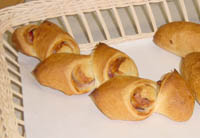
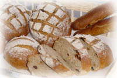
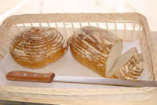

|
バタール | フランスパンの香ばしい香りは ゆったりした朝食向き？ それとも のんびり午後のカフェオレと一緒？ 月・水・金曜日に焼いています |
 |
ベーコンエピ | こんがりベーコンにブラックペッパー がとってもお似合い。これだけがお目 当てのお客様はどなたですか？ 月・水・金曜日に焼いています |
 |
森のノア・レザン | くるみとレーズンを練り込んだライ麦の パンはくるみの香ばしさと、レーズンの 甘さが微妙にマッチング スライスしてトーストしたらバターをつけて さあ、召し上がれ。（チーズをはさんで サンドイッチでもいいかも・・・） 火・木・土曜日に焼いています |
| チーズフランス | たっぷり入ったチーズは栄養もたっぷり。 フランスパンとの香りの競演ですね！ |
|
| ポテトフランス | ４月から登場した新人 新じゃがの香りは初夏のかおりを運んで オレンジの森の店頭に並びました |
|
 |
パン・ド・カンパーニュ | 文字通り「田舎風のパン」 ライ麦を配合した素朴な味と香りは トーストでも、いろいろな具材をはさんで サンドイッチでもお好みしだいで楽しんで ください |